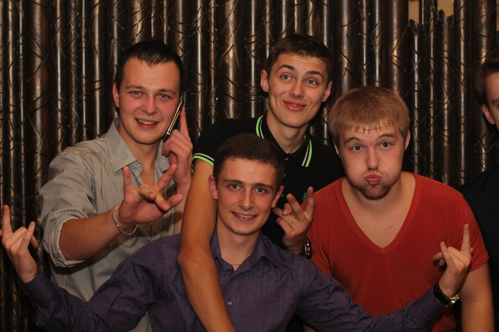
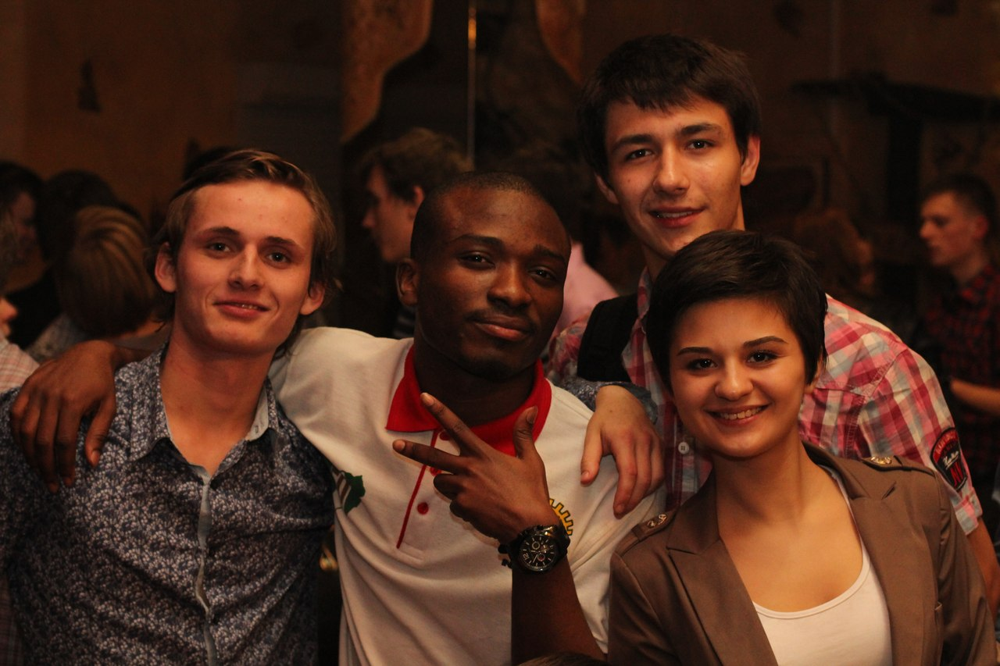

Date: Now 6, 2013
Ночные снайперы
Факультет радиофизики не лишен творческих личностей - здесь учится много разносторонне развитых людей со своими интересами и совершенно непредсказуемыми идеями. Кто-то увлекается пением, кто-то - танцами, а кто-то, возможно, изобретением ядерного оружия. А какие ассоциации возникают у вас при слове «диджей»? Ночные клубы, громкая музыка, безудержное веселье? Так ли это на самом деле? Чем эти люди отличаются от нас, обычных студентов?
- Есть ли у тебя творческий псевдоним? И связан ли он с чем-то?
Against The Sky. Работая в студии или выступая, я остаюсь наедине с музыкой, наедине с небом. Вот так.
- С какого возраста ты начал увлекаться музыкой?
Сколько себя помню, музыка всегда привлекала меня своей магией. Она дарит мне эмоции, и это замечательно.
- Как бы ты определил свой стиль и влияния на него?
Думаю, не стоит ограничиваться в том, что нам должно нравиться и что мы делаем. Зациклиться на чем-то одном – значит не замечать красоты остального, а красота есть во всем. Если говорить о выступлениях, то, по большому счету, я играю progressive|house|trance|trap|dub step, но я всегда открыт для экспериментов. Ну а слушать люблю разную музыку – главное, чтобы она была интересной.
- Чем ты интересуешься помимо музыки?
Если говорить коротко – я интересуюсь всем, что интересно по своей сути. Как я уже сказал, не стоит себя ограничивать, так что я делаю все, что мне нравится.
- Ты относишься к музыке, которую играешь, как к работе, или для тебя это что-то большее?
Напротив – я просто делаю то, что мне нравится, от чего я получаю удовольствие. Музыка помогает мне понять себя.
- Как отдыхаешь от музыки?
На самом деле, у меня есть куча проектов, и когда нет идей по одному из них, я вполне могу переключиться на другой и продолжать работать. Но всё-таки иногда надо отвлекаться. В такие моменты я вспоминаю, как прекрасна Вселенная, и у меня есть жизнь, чтобы ею насладиться.
-Что посоветуешь тем, кто хочет стать Dj?
Не играй в чужие игры - пусть музыка будет для тебя только своей игрой. Нет никаких правил. Придумывай свои правила и нарушай их. Мечтай о большем и никогда не сдавайся.
- Есть ли у тебя творческий псевдоним? И связан ли он с чем-то?
Мой
творческий псевдоним Dj Globe. На второй вопрос отвечу так: в
школе, когда проходили дискотеки, меня и ещё пару моих друзей просили сделать афишу, и в первый раз мы
хотели выпендриться и написали в шутку псевдонимы. Я был Dj KOLOBOK, а друга моего мы и вовсе назвали в честь сигарет PallMall. На первый взгляд, никто на это, понятное дело, вроде бы не обращал внимания, но уже после первых дискотек стали спрашивать, кто это. Когда время подходило к 11-ому классу, я стал больше увлекаться Dj-вом и написанием собственной музыки, ремиксов. Мне захотелось изменить мой псевдоним. В голову почему-
то пришло «Globe» - и сразу после этого мне на улице везде стала попадаться эта надпись. Я подумал, что это знак
и решил ничего не менять. Так и родился мой псевдоним.
- Как бы ты определил свой стиль и влияния на него?
Я увлекаюсь такими стилями, как Dutch, Electro и Progressive House. Думаю, у многих все начиналось с Armin van Buuren, с Trance музыки, но поскольку в клубах такое не всем по душе и самому мне это тоже не оказалось близко, я решил поменять свои взгляды. Вдохновили меня такие продюсеры и ди-джеи как Tiёsto, Steve Aoki, Laidback luke, трио Swedish House Mafia (в составе Steve Angello, Sebastian Ingrosso и Axwell),W&W, Arty, Bobina, Omnia, Deadmau5, Avicii, David Guetta, Chuckie и многие другие.
- Должен ли Dj следовать моде в музыке?
На мой взгляд, он должен сам делать то, что будет модно...
- Чем ты интересуешься помимо музыки?
Увлекаюсь каратэ, футболом, хожу, как и все, в театры и кино, играю с друзьями во всевозможные игры, выезжаю с ними на природу, сейчас много своего времени провожу с маленькой сестренкой, она поддерживает меня в музыке, любит «подиджеить» на моем контроллере....
- После окончания факультета планируешь работать по специальности? Какая запись будет в твоей трудовой книжке?
После университета я буду стараться все-таки устроиться по специальности, но, конечно же, продолжать заниматься своим любимым делом.
- Что посоветуешь тем, кто хочет стать Dj?
Много читайте - предела никогда нельзя достигнуть, совершенствуйтесь каждую секунду, а, может, и чаще, смотрите на умных людей и слушайте их советы!

Как видите, быть диджеем не так уж и просто. Перед парнями стоит поистине сложная задача - угодить всем, ведь предпочтения в музыке у каждого разные. Однако уже не первый раз мастера своего дела радуют нас замечательными музыкальными подборками не только на факультетских мероприятиях, но и в клубе «Сфера», где радиофизики часто продолжают их празднование.
Хорошей музыки всем в уши, а DJ-ям - покорения творческих высот!